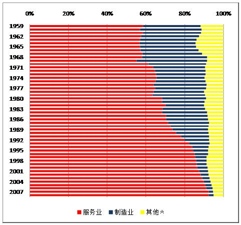

返回主页
图5 香港各行业占本地生产总值的比重，1959－2008年（单位：％）

(数据来源：1959-69年的数据来自Laurence C. Chau, “Estimates of Hong Kong’s Gross Domestic Product, 1959-69,” Hong Kong Economic Papers, Vol. 1972, No. 7 (Sept. 1972); 1970-79年的数据来自Groningen Growth and Development Centre 10-sector database, June 2007, http://www.ggdc.net/; 1980-2008年的数据来自香港特区政府统计处网页http://www.censtatd.gov.hk/showtableexcel2.jsp?tableID=036&charsetID=2。 )
图6 按行业划分的工作人口比率，1981－2006年（单位：％）
version:1.0; jobnet@188.com © retter2012.com